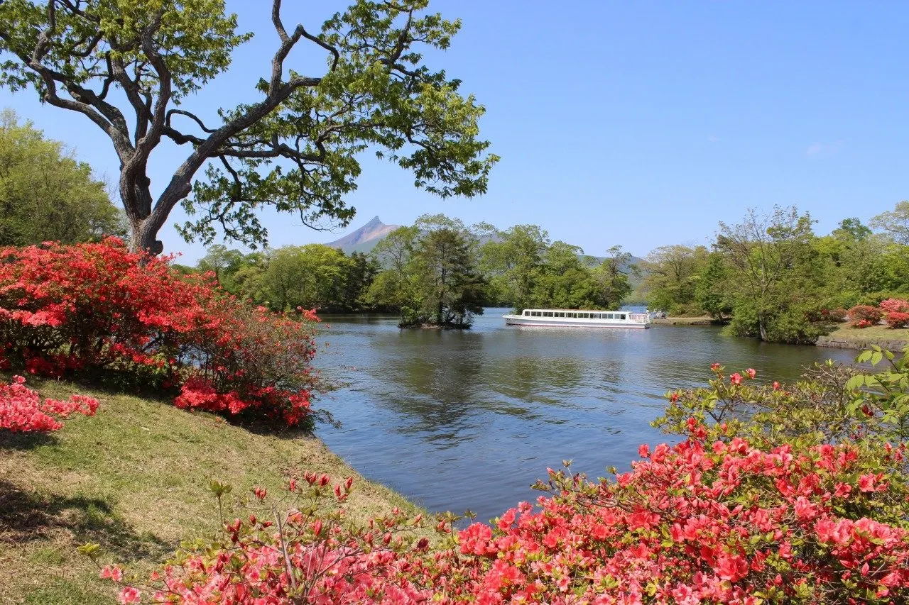
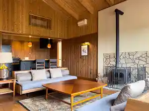
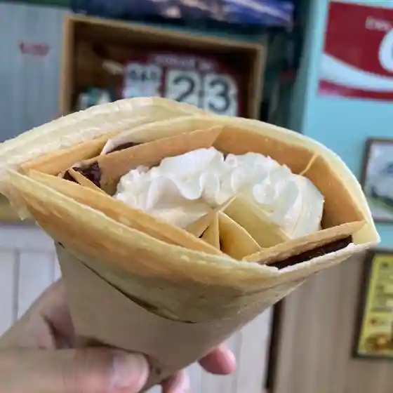
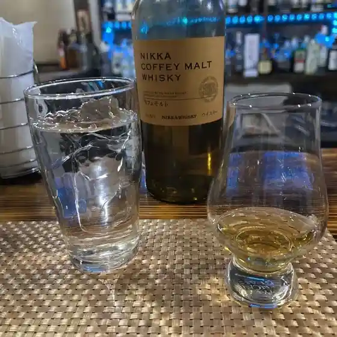
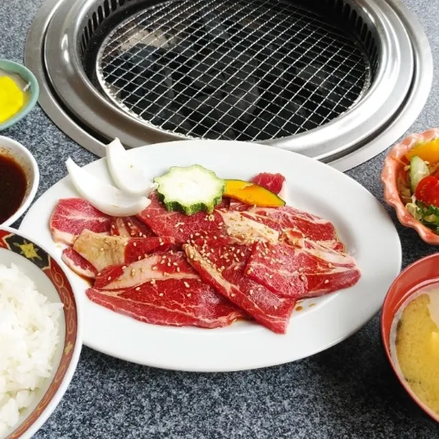
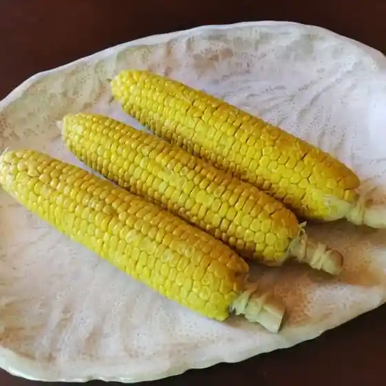
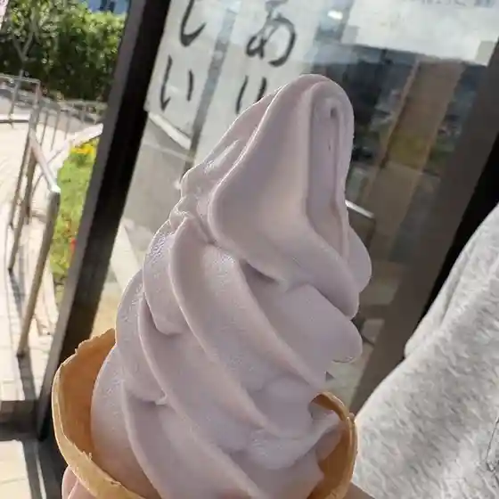

Mori
Moricho · Hokkaido
Moricho
Highlighted on the Hokkaido map.

Stay
エンゼルグランヴィラ函館（旧ヒルズテラス函館）

Enzeruguranvira Hakodate ( Kyuu Hiruzuterasu Hakodate )
リブマックスリゾート函館 グリーンピア大沼
Ribumakkusurizooto Hakodate Guriinpia Oonuma
Dining
グリーンパーク

Guriinpaaku
PRONTE

Pronte
みどり旅館

Midori Ryokan
呑み処 くまちゃん

Nomi Tokoro Kumachan
焼肉亭龍

Yakiniku Tei Ryuu
丹羽青果

Tanba Seika
民宿 潮騒

Minshuku Shiosai
道の駅 つど～る・プラザ・さわら 物産館

Michi No Eki Tsudo ~ Ru Puraza Sawara Bussan Kan
ラルズマート 森店
Raruzumaato Moriten
悟喰う
Satoshi Kuu
セイコーマート 森尾白内店
Seikoomaato Morio Shiro Uchimise
ひこま豚食堂＆ファーマーズショップ
Hikoma Buta Shokudou & Faamaazushoppu
株式会社 マルモ食品
Kabushikigaisha Marumo Shokuhin
マノワラボ
Manowarabo
優寿司
Yuu Sushi
焼肉居酒屋 屯こう
Yakiniku Izakaya Ton Kou
キッチンもりもり
Kitchin Morimori
やなぎ
Yanagi
あっちゃ
Atcha
いかめし 阿部商店
Ikameshi Abe Shouten
ドルマン洋菓子店
Doruman Yougashi Mise
坂本農園
Sakamoto Nouen
秋田屋
Akita Ya
スーパーとうかい 砂原店
Suupaa Toukai Sunahara Mise
Sights
Komagagaku
Komagagaku